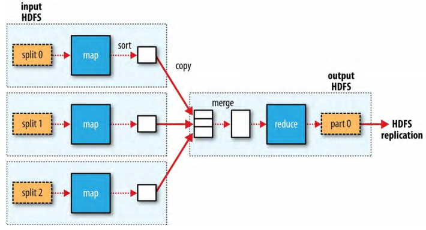
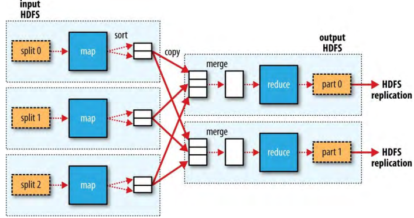

Chapter 2、MapReduce
MapReduce是一个数据处理的编程模型，MapReduce本质上是并行的，让有足够运算能力机器的人可以进行大规模的数据分析。
1、使用Hadoop分析数据（Analyzing the Data with Hadoop）
要利用Hadoop提供的并行处理的优势，需要以MapReduce job的方式表示查询。经过本地、小规模的测试后，可以在集群的机器上运行
1.1、Map and Reduce
MapReduce把处理分为两个阶段：map阶段和reduce阶段。每个阶段都把键值对（key-value pairs）作为输入和输出，键值的类型由开发者确定，开发者还需要指定两个方法：map方法和reduce方法。
1.2、Java MapReduce
1.2.1、编写Mapper
继承Mapper类，重写map方法；输入输出参数要使用Hadoop提供的为网络序列化进行了优化的基本类型，而不是Java的类型。这些类型在 org.apache.hadoop.io包中。输出数据写到Context的实例中。
import java.io.IOException;
import org.apache.hadoop.io.IntWritable;
import org.apache.hadoop.io.LongWritable;
import org.apache.hadoop.io.Text;
import org.apache.hadoop.mapreduce.Mapper;
public class MaxTemperatureMapper
extends Mapper<LongWritable, Text, Text, IntWritable> {
private static final int MISSING = 9999;
@Override
public void map(LongWritable key, Text value, Context context)
throws IOException, InterruptedException {
String line = value.toString();
String year = line.substring(15, 19);
int airTemperature;
if (line.charAt(87) == '+') { // parseInt doesn't like leading plus signs
airTemperature = Integer.parseInt(line.substring(88, 92));
} else {
airTemperature = Integer.parseInt(line.substring(87, 92));
}
String quality = line.substring(92, 93);
if (airTemperature != MISSING && quality.matches("[01459]")) {
context.write(new Text(year), new IntWritable(airTemperature));
}
}
}
1.2.2、编写Reducer
与Mapper类似，继承Reducer类重写reduce方法，输出写到Context的实例中。
import java.io.IOException;
import org.apache.hadoop.io.IntWritable;
import org.apache.hadoop.io.Text;
import org.apache.hadoop.mapreduce.Reducer;
public class MaxTemperatureReducer
extends Reducer<Text, IntWritable, Text, IntWritable> {
@Override
public void reduce(Text key, Iterable<IntWritable> values,
Context context)
throws IOException, InterruptedException {
int maxValue = Integer.MIN_VALUE;
for (IntWritable value : values) {
maxValue = Math.max(maxValue, value.get());
}
context.write(key, new IntWritable(maxValue));
}
}
1.2.3、编写运行MapReduce job的方法
Job对象可以指定job的定义和控制job的运行。在Hadoop集群上运行job时，把代码打包为jar文件（Hadoop会把它在集群中分发）。使用Job实例的setJarByClass()方法传递一个class，Hadoop会使用这个class搜寻包含这个class的Jar文件来找到相关的Jar文件。MapReduce不是使用明确指定Jar文件名字的方式查找Jar文件。
使用FileInputFormat的静态方法addInputPath()来指定输入路径。这个路径可以是一个文件、一个目录（输入包含目录中的所有文件）、或者一个格式（pattern）。可以使用addInputPath()方法多次，来使用多个路径的输入。
使用FileOutputFormat的静态方法setOutputPath()来指定输出路径。指定一个目录，reduce方法会把输出文件写到这个目录。只能使用方法setOutputPath()一次设置一个目录。在运行job之前这个目录不能存在，如果存在Hadoop会报错并且不运行job。这样做是为了预防数据丢失（防止一个job覆盖另一个job的输出）。
通过job实例的setMapperClass()、setReducerClass()方法设置map、reduce的class。job实例的setOutputKeyClass()、setOutputValueClass()控制reduce方法的输出类型，必须和Reducer类的输出类型一致。map方法的输出类型默认是和reduce方法的输出类型一样的，如果不同需要用job实例的方法setMapOutputKeyClass()、setMapOutputValueClass()设置map的输出类型。
通过job实例的setInputFormatClass()方法设置输入格式，如果使用默认的TextInputFormat则不用设置。
InputFormat、OutputFormat、InputKey、InputValue、OutputKey、OutputValue必须相匹配。
job实例的waitForCompletion(boolean verbose)方法提交job并等待job完成，如果verbose为true，会在控制台打印job的进度。返回值是Boolean类型，job成功为true，失败为false。
import org.apache.hadoop.fs.Path;
import org.apache.hadoop.io.IntWritable;
import org.apache.hadoop.io.Text;
import org.apache.hadoop.mapreduce.Job;
import org.apache.hadoop.mapreduce.lib.input.FileInputFormat;
import org.apache.hadoop.mapreduce.lib.output.FileOutputFormat;
public class MaxTemperature {
public static void main(String[] args) throws Exception {
if (args.length != 2) {
System.err.println("Usage: MaxTemperature <input path> <output path>");
System.exit(-1);
}
Job job = Job.getInstance();
// 通过查找给定的类的来源来设置JAR
job.setJarByClass(MaxTemperature.class);
job.setJobName("Max temperature");
// 输入文件路径,可以多次调用实现多路径的输入.
FileInputFormat.addInputPath(job, new Path(args[0]));
// 输出文件路径,在运行前这个路径目录是不应该存在的,否则Hadoop会报错并拒绝运行作业
FileOutputFormat.setOutputPath(job, new Path(args[1]));
// mapper类
job.setMapperClass(MaxTemperatureMapper.class);
// reducer类
job.setReducerClass(MaxTemperatureReducer.class);
// 输入类型没有设置，因为使用的是默认的TextInputFormat
// 设置输入class
// job.setInputFormatClass(cls);
// 输出类型必须和reducer类产生的输出相匹配。
// 输出键类型
job.setOutputKeyClass(Text.class);
// 输出值类型
job.setOutputValueClass(IntWritable.class);
// 输入类型没有设置，因为使用的是默认的TextInputFormat
// 提交作业并等待完成
System.exit(job.waitForCompletion(true) ? 0 : 1);
}
}
1.2.4、测试运行（A test run）
Hadoop standalone模式，在这种模式下Hadoop使用本地文件系统运行，有一个本地的job runner。
使用hadoop命令运行MapReduce：
export HADOOP_CLASSPATH=hadoop-examples.jar
hadoop MaxTemperature input/ncdc/sample.txt output
hadoop命令的第一个参数是类名，Hadoop会启动一个Java虚拟机（JVM）来运行这个类。hadoop命令会把Hadoop的库（和它们的依赖）加入到classpath中并且也会获取Hadoop的配置。执行hadoop命令前，首先把应用类加入到了定义的环境变量HADOOP_CLASSPATH中，hadoop命令会从这个环境变量获取类。
eclipse执行MapReduce的main函数；
输入文件sample.txt：
0067011990999991950051507004+68750+023550FM-12+038299999V0203301N00671220001CN9999999N9+00001+99999999999
0043011990999991950051512004+68750+023550FM-12+038299999V0203201N00671220001CN9999999N9+00221+99999999999
0043011990999991950051518004+68750+023550FM-12+038299999V0203201N00261220001CN9999999N9-00111+99999999999
0043012650999991949032412004+62300+010750FM-12+048599999V0202701N00461220001CN0500001N9+01111+99999999999
0043012650999991949032418004+62300+010750FM-12+048599999V0202701N00461220001CN0500001N9+00781+99999999999
日志如下：
19/08/29 11:59:53 INFO deprecation: session.id is deprecated. Instead, use dfs.metrics.session-id
19/08/29 11:59:53 INFO JvmMetrics: Initializing JVM Metrics with processName=JobTracker, sessionId=
19/08/29 11:59:54 WARN JobSubmitter: Hadoop command-line option parsing not performed. Implement the Tool interface and execute your application with ToolRunner to remedy this.
19/08/29 11:59:54 WARN JobSubmitter: No job jar file set. User classes may not be found. See Job or Job#setJar(String).
19/08/29 11:59:54 INFO FileInputFormat: Total input paths to process : 1
19/08/29 11:59:54 INFO JobSubmitter: number of splits:1
19/08/29 11:59:54 INFO JobSubmitter: Submitting tokens for job: job_local1992747137_0001
19/08/29 11:59:54 WARN Configuration: file:/tmp/hadoop-Administrator/mapred/staging/Administrator1992747137/.staging/job_local1992747137_0001/job.xml:an attempt to override final parameter: mapreduce.job.end-notification.max.retry.interval; Ignoring.
19/08/29 11:59:54 WARN Configuration: file:/tmp/hadoop-Administrator/mapred/staging/Administrator1992747137/.staging/job_local1992747137_0001/job.xml:an attempt to override final parameter: mapreduce.job.end-notification.max.attempts; Ignoring.
19/08/29 11:59:54 WARN Configuration: file:/tmp/hadoop-Administrator/mapred/local/localRunner/Administrator/job_local1992747137_0001/job_local1992747137_0001.xml:an attempt to override final parameter: mapreduce.job.end-notification.max.retry.interval; Ignoring.
19/08/29 11:59:54 WARN Configuration: file:/tmp/hadoop-Administrator/mapred/local/localRunner/Administrator/job_local1992747137_0001/job_local1992747137_0001.xml:an attempt to override final parameter: mapreduce.job.end-notification.max.attempts; Ignoring.
19/08/29 11:59:54 INFO Job: The url to track the job: http://localhost:8080/
19/08/29 11:59:54 INFO Job: Running job: job_local1992747137_0001
19/08/29 11:59:54 INFO LocalJobRunner: OutputCommitter set in config null
19/08/29 11:59:54 INFO LocalJobRunner: OutputCommitter is org.apache.hadoop.mapreduce.lib.output.FileOutputCommitter
19/08/29 11:59:54 INFO LocalJobRunner: Waiting for map tasks
19/08/29 11:59:54 INFO LocalJobRunner: Starting task: attempt_local1992747137_0001_m_000000_0
19/08/29 11:59:54 INFO ProcfsBasedProcessTree: ProcfsBasedProcessTree currently is supported only on Linux.
19/08/29 11:59:54 INFO Task: Using ResourceCalculatorProcessTree : org.apache.hadoop.yarn.util.WindowsBasedProcessTree@39b63ee9
19/08/29 11:59:54 INFO MapTask: Processing split: file:/D:/EWorkspace/hadoop-book/ch02-mr-intro/sample.txt:0+533
19/08/29 11:59:54 INFO MapTask: Map output collector class = org.apache.hadoop.mapred.MapTask$MapOutputBuffer
19/08/29 11:59:54 INFO MapTask: (EQUATOR) 0 kvi 26214396(104857584)
19/08/29 11:59:54 INFO MapTask: mapreduce.task.io.sort.mb: 100
19/08/29 11:59:54 INFO MapTask: soft limit at 83886080
19/08/29 11:59:54 INFO MapTask: bufstart = 0; bufvoid = 104857600
19/08/29 11:59:54 INFO MapTask: kvstart = 26214396; length = 6553600
19/08/29 11:59:54 INFO LocalJobRunner:
19/08/29 11:59:54 INFO MapTask: Starting flush of map output
19/08/29 11:59:54 INFO MapTask: Spilling map output
19/08/29 11:59:54 INFO MapTask: bufstart = 0; bufend = 45; bufvoid = 104857600
19/08/29 11:59:54 INFO MapTask: kvstart = 26214396(104857584); kvend = 26214380(104857520); length = 17/6553600
19/08/29 11:59:54 INFO MapTask: Finished spill 0
19/08/29 11:59:54 INFO Task: Task:attempt_local1992747137_0001_m_000000_0 is done. And is in the process of committing
19/08/29 11:59:54 INFO LocalJobRunner: map
19/08/29 11:59:54 INFO Task: Task 'attempt_local1992747137_0001_m_000000_0' done.
19/08/29 11:59:54 INFO LocalJobRunner: Finishing task: attempt_local1992747137_0001_m_000000_0
19/08/29 11:59:54 INFO LocalJobRunner: map task executor complete.
19/08/29 11:59:54 INFO LocalJobRunner: Waiting for reduce tasks
19/08/29 11:59:54 INFO LocalJobRunner: Starting task: attempt_local1992747137_0001_r_000000_0
19/08/29 11:59:54 INFO ProcfsBasedProcessTree: ProcfsBasedProcessTree currently is supported only on Linux.
19/08/29 11:59:54 INFO Task: Using ResourceCalculatorProcessTree : org.apache.hadoop.yarn.util.WindowsBasedProcessTree@40c1547e
19/08/29 11:59:54 INFO ReduceTask: Using ShuffleConsumerPlugin: org.apache.hadoop.mapreduce.task.reduce.Shuffle@1397c9bc
19/08/29 11:59:54 INFO MergeManagerImpl: MergerManager: memoryLimit=1503238528, maxSingleShuffleLimit=375809632, mergeThreshold=992137472, ioSortFactor=10, memToMemMergeOutputsThreshold=10
19/08/29 11:59:54 INFO EventFetcher: attempt_local1992747137_0001_r_000000_0 Thread started: EventFetcher for fetching Map Completion Events
19/08/29 11:59:54 INFO LocalFetcher: localfetcher#1 about to shuffle output of map attempt_local1992747137_0001_m_000000_0 decomp: 57 len: 61 to MEMORY
19/08/29 11:59:54 INFO InMemoryMapOutput: Read 57 bytes from map-output for attempt_local1992747137_0001_m_000000_0
19/08/29 11:59:54 INFO MergeManagerImpl: closeInMemoryFile -> map-output of size: 57, inMemoryMapOutputs.size() -> 1, commitMemory -> 0, usedMemory ->57
19/08/29 11:59:54 INFO EventFetcher: EventFetcher is interrupted.. Returning
19/08/29 11:59:54 INFO LocalJobRunner: 1 / 1 copied.
19/08/29 11:59:54 INFO MergeManagerImpl: finalMerge called with 1 in-memory map-outputs and 0 on-disk map-outputs
19/08/29 11:59:54 INFO Merger: Merging 1 sorted segments
19/08/29 11:59:54 INFO Merger: Down to the last merge-pass, with 1 segments left of total size: 50 bytes
19/08/29 11:59:54 INFO MergeManagerImpl: Merged 1 segments, 57 bytes to disk to satisfy reduce memory limit
19/08/29 11:59:54 INFO MergeManagerImpl: Merging 1 files, 61 bytes from disk
19/08/29 11:59:54 INFO MergeManagerImpl: Merging 0 segments, 0 bytes from memory into reduce
19/08/29 11:59:54 INFO Merger: Merging 1 sorted segments
19/08/29 11:59:54 INFO Merger: Down to the last merge-pass, with 1 segments left of total size: 50 bytes
19/08/29 11:59:54 INFO LocalJobRunner: 1 / 1 copied.
19/08/29 11:59:54 INFO deprecation: mapred.skip.on is deprecated. Instead, use mapreduce.job.skiprecords
19/08/29 11:59:54 INFO Task: Task:attempt_local1992747137_0001_r_000000_0 is done. And is in the process of committing
19/08/29 11:59:54 INFO LocalJobRunner: 1 / 1 copied.
19/08/29 11:59:54 INFO Task: Task attempt_local1992747137_0001_r_000000_0 is allowed to commit now
19/08/29 11:59:54 INFO FileOutputCommitter: Saved output of task 'attempt_local1992747137_0001_r_000000_0' to file:/D:/EWorkspace/hadoop-book/ch02-mr-intro/output/_temporary/0/task_local1992747137_0001_r_000000
19/08/29 11:59:54 INFO LocalJobRunner: reduce > reduce
19/08/29 11:59:54 INFO Task: Task 'attempt_local1992747137_0001_r_000000_0' done.
19/08/29 11:59:54 INFO LocalJobRunner: Finishing task: attempt_local1992747137_0001_r_000000_0
19/08/29 11:59:54 INFO LocalJobRunner: reduce task executor complete.
19/08/29 11:59:55 INFO Job: Job job_local1992747137_0001 running in uber mode : false
19/08/29 11:59:55 INFO Job: map 100% reduce 100%
19/08/29 11:59:55 INFO Job: Job job_local1992747137_0001 completed successfully
19/08/29 11:59:55 INFO Job: Counters: 33
File System Counters
FILE: Number of bytes read=1574
FILE: Number of bytes written=481918
FILE: Number of read operations=0
FILE: Number of large read operations=0
FILE: Number of write operations=0
Map-Reduce Framework
Map input records=5
Map output records=5
Map output bytes=45
Map output materialized bytes=61
Input split bytes=121
Combine input records=0
Combine output records=0
Reduce input groups=2
Reduce shuffle bytes=61
Reduce input records=5
Reduce output records=2
Spilled Records=10
Shuffled Maps =1
Failed Shuffles=0
Merged Map outputs=1
GC time elapsed (ms)=0
CPU time spent (ms)=0
Physical memory (bytes) snapshot=0
Virtual memory (bytes) snapshot=0
Total committed heap usage (bytes)=514850816
Shuffle Errors
BAD_ID=0
CONNECTION=0
IO_ERROR=0
WRONG_LENGTH=0
WRONG_MAP=0
WRONG_REDUCE=0
File Input Format Counters
Bytes Read=533
File Output Format Counters
Bytes Written=29
从日志可知，job有一个ID：job_local1992747137_0001；运行了一个map task和一个reduce task（ID分别是：attempt_local1992747137_0001_m_000000_0、attempt_local1992747137_0001_r_000000_0）。知道job和task的ID在MapReduce故障排查时是很有用的。
日志标题“Counters”的最后一段，展示了Hadoop为它运行的每个job生成的数据。可以用来检查处理的数据量是否是所期望的。例如，可以追踪处理的记录：5条map输入记录产生5条map输出记录，两组的5条reduce输入记录产生两个reduce输出记录。
输出文件：
output\
├──._SUCCESS.crc
├──.part-r-00000.crc
├──_SUCCESS
└──part-r-00000
输出目录中包含每个reducer一个的输出文件，此处的输出文件是part-r-00000。
输出内容：
1949 111
1950 22
2、扩展（Scaling Out）
使用Hadoop的资源管理系统（YARN），可以使MapRedue运算扩展到集群中每个拥有一部分数据的机器。
2.1、数据流（Data Flow）
一个MapReduce的job是一个客户端想要执行的工作的单位：它由输入数据、MapReduce程序、配置信息组成。Hadoop把job分为两类task：map task和reduce task。tasks用YARN调度并且在集群的节点上运行。如果task失败，它会在一个不同节点上被重新调度。
Hadoop把MapReduce job的输入划分为固定大小的小块（叫做输入分片或者分片，input splits）。Hadoop为每个分片创建一个map task，为分片中的每条记录运行用户自定义的map方法。
有许多的分片意味着和处理整个输入相比处理每个分片的时间很短。如果并行处理分片，分片很小的时候处理会更加负载均衡，因为在job运行过程中较快的机器比较慢的机器能够处理更多的分片。即使机器是一样的，失败的处理或者其他同时运行的job也需要负载均衡，并且当分片的粒度更细负载均衡的质量就越高。
另一方面，如果分片太小，管理分片的开销和map task创建会主导job执行的时间。对大多数jobs，好的分片大小趋向于HDFS block的大小，即默认128M，尽管可以为集群改变这个配置（为新创建的文件）或者当每个文件创建的时候指定。
Hadoop尽量在输入数据所在的节点上运行map task，这样不会消耗珍贵的集群网络带宽，这叫做数据本地性优化（data locality optimization）。如果保存block 复本（replica）的所有本地节点都繁忙，则寻找block复本所在本地机架的空闲节点；很偶然的情况下，本地机架也没有可用节点，则使用不同机架（off-rack）的节点，这会造成跨机架（inter-rack）网络传输。
由上可见，分片大小应该和block大小相同的原因是：这个大小是保证一个分片在同一个节点上保存的最大的大小。如果分片跨越多个block，不能保证这些block在同一个节点上，map task进行处理时可能会造成数据跨节点的传输，很明显会比在一个节点处理数据要慢。
map task把输出结果写到本地磁盘而不是HDFS。因为map输出是中间结果：需要reduce task进行处理才产生最终输出，并且一旦job完成map 输出就可以删除。所以，如果把map输出存放到HDFS，就不划算。如果map task的输出在被reduce task使用前map task失败，Hadoop会自动在其它节点上运行这个map task重新产生map输出。
reduce task没有数据本地性的优势；一个reduce task的输入通常是来自所有mapper的输出。reduce的输出通常保存在HDFS中以保证可靠性。对于reduce输出的每个HDFS block，第一个复本保存在本地节点，其它复本保存在不同机架的其它节点以保证可靠性。reduce输出是需要消耗网络带宽的，但是和HDFS写pipeline消耗的差不多。
Figure 2-3.MapReduce data flow with a single reduce task

如图，虚线框代表节点，虚线箭头代表节点内的数据传输，实线箭头代表节点间的数据传输。
reduce task的数量不是由输入数据大小控制的，而是独立指定的。
当有多个reducers的时候，map task会把输出分区（partition），为每个reduce task创建一个分区。每个分区可以有很多keys（和对应的values），但是每一个分区都包含所有的key。可以使用用户定义的分区方法来控制分区，但是通常使用默认的分区器（partitioner）——它使用hash方法分区——工作良好。
Figure 2-4 MapReduce data flow with multiple reduce tasks

最后，也存在没有reduce task的情况。当数据处理可以完全并行的时候是不需要混洗的。这时，唯一的跨节点数据传输就是map task把输出写到HDFS。
2.2、Combiner方法（Combiner fucntions）
许多MapReduce jobs的性能受到集群网络可用带宽的限制，所有要设法减少map task 和reduce task之间的数据传输。可以对map task输出使用combiner 方法，combiner方法的输出构成 reduce task输入。调用combiner方法的目的是减少传递给reduce task的数据量，但是combiner方法只是一个优化，调用combiner方法不应该改变reducer的输出。
例如，在求最高温度年份的例子中，每个map task返回了一系列的年份温度数据，如果使用combiner方法求出每个map task输出中最大的温度年份，那么传递给reduce task的数据量就会变小了。需要注意的是，combiner方法可能不适用于所有的场合。
2.2.1、指定一个combiner方法（Specifying a combiner function）
combiner方法使用Reducer类定义，对于之前求最高温度的例子，combiner和reducer可以是一样的。只需要在job实例上设置combiner类即可。
旧的MapTemperature代码改进后为：
import org.apache.hadoop.fs.Path;
import org.apache.hadoop.io.IntWritable;
import org.apache.hadoop.io.Text;
import org.apache.hadoop.mapreduce.Job;
import org.apache.hadoop.mapreduce.lib.input.FileInputFormat;
import org.apache.hadoop.mapreduce.lib.output.FileOutputFormat;
public class MaxTemperatureWithCombiner {
public static void main(String[] args) throws Exception {
if (args.length != 2) {
System.err.println("Usage: MaxTemperatureWithCombiner <input path> " +
"<output path>");
System.exit(-1);
}
Job job = new Job();
job.setJarByClass(MaxTemperatureWithCombiner.class);
job.setJobName("Max temperature");
FileInputFormat.addInputPath(job, new Path(args[0]));
FileOutputFormat.setOutputPath(job, new Path(args[1]));
job.setMapperClass(MaxTemperatureMapper.class);
// 设置combiner类
job.setCombinerClass(MaxTemperatureReducer.class);
job.setReducerClass(MaxTemperatureReducer.class);
job.setOutputKeyClass(Text.class);
job.setOutputValueClass(IntWritable.class);
System.exit(job.waitForCompletion(true) ? 0 : 1);
}
}
2.3、运行一个分布式的MapReduce Job（Running a Distributed MapReduce Job）
本地运行的MapReduce不需要修改就可以在集群上运行，这是MapReduce的一个特点：它能够根据数据量和硬件进行扩展。
3、Hadoop Streaming
略